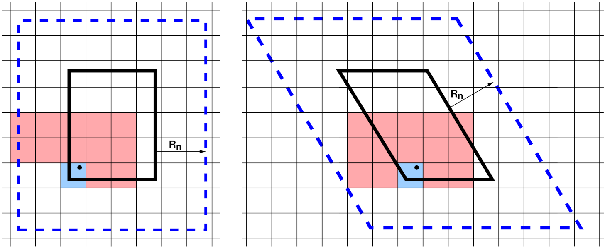

\(\renewcommand{\AA}{\text{Å}}\)
4.4.3. Neighbor lists
To compute forces efficiently, each processor creates a Verlet-style neighbor list which enumerates all pairs of atoms i,j (i = owned, j = owned or ghost) with separation less than the applicable neighbor list cutoff distance. In LAMMPS, the neighbor lists are stored in a multiple-page data structure; each page is a contiguous chunk of memory which stores vectors of neighbor atoms j for many i atoms. This allows pages to be incrementally allocated or deallocated in blocks as needed. Neighbor lists typically consume the most memory of any data structure in LAMMPS. The neighbor list is rebuilt (from scratch) once every few timesteps, then used repeatedly each step for force or other computations. The neighbor cutoff distance is \(R_n = R_f + \Delta_s\), where \(R_f\) is the (largest) force cutoff defined by the interatomic potential for computing short-range pairwise or manybody forces and \(\Delta_s\) is a “skin” distance that allows the list to be used for multiple steps assuming that atoms do not move very far between consecutive time steps. Typically, the code triggers reneighboring when any atom has moved half the skin distance since the last reneighboring; this and other options of the neighbor list rebuild can be adjusted with the neigh_modify command.
On steps when reneighboring is performed, atoms which have moved outside their owning processor’s subdomain are first migrated to new processors via communication. Periodic boundary conditions are also (only) enforced on these steps to ensure each atom is re-assigned to the correct processor. After migration, the atoms owned by each processor are stored in a contiguous vector. Periodically, each processor spatially sorts owned atoms within its vector to reorder it for improved cache efficiency in force computations and neighbor list building. For that, atoms are spatially binned and then reordered so that atoms in the same bin are adjacent in the vector. Atom sorting can be disabled or its settings modified with the atom_modify command.

neighbor list stencils
A 2d simulation subdomain (thick black line) and the corresponding ghost atom cutoff region (dashed blue line) for both orthogonal (left) and triclinic (right) domains. A regular grid of neighbor bins (thin lines) overlays the entire simulation domain and need not align with subdomain boundaries; only the portion overlapping the augmented subdomain is shown. In the triclinic case, it overlaps the bounding box of the tilted rectangle. The blue- and red-shaded bins represent a stencil of bins searched to find neighbors of a particular atom (black dot).
To build a local neighbor list in linear time, the simulation domain is overlaid (conceptually) with a regular 3d (or 2d) grid of neighbor bins, as shown in the neighbor list stencils figure for 2d models and a single MPI processor’s subdomain. Each processor stores a set of neighbor bins which overlap its subdomain, extended by the neighbor cutoff distance \(R_n\). As illustrated, the bins need not align with processor boundaries; an integer number in each dimension is fit to the size of the entire simulation box.
Most often, LAMMPS builds what is called a “half” neighbor list where each i,j neighbor pair is stored only once, with either atom i or j as the central atom. The build can be done efficiently by using a pre-computed “stencil” of bins around a central origin bin which contains the atom whose neighbors are being searched for. A stencil is simply a list of integer offsets in x,y,z of nearby bins surrounding the origin bin which are close enough to contain any neighbor atom j within a distance \(R_n\) from any atom i in the origin bin. Note that for a half neighbor list, the stencil can be asymmetric, since each atom only need store half its nearby neighbors.
These stencils are illustrated in the figure for a half list and a bin size of \(\frac{1}{2} R_n\). There are 13 red+blue stencil bins in 2d (for the orthogonal case, 15 for triclinic). In 3d there would be 63, 13 in the plane of bins that contain the origin bin and 25 in each of the two planes above it in the z direction (75 for triclinic). The triclinic stencil has extra bins because the bins tile the bounding box of the entire triclinic domain, and thus are not periodic with respect to the simulation box itself. The stencil and logic for determining which i,j pairs to include in the neighbor list are altered slightly to account for this.
To build a neighbor list, a processor first loops over its “owned” plus “ghost” atoms and assigns each to a neighbor bin. This uses an integer vector to create a linked list of atom indices within each bin. It then performs a triply-nested loop over its owned atoms i, the stencil of bins surrounding atom i’s bin, and the j atoms in each stencil bin (including ghost atoms). If the distance \(r_{ij} < R_n\), then atom j is added to the vector of atom i’s neighbors.
Here are additional details about neighbor list build options LAMMPS supports:
The choice of bin size is an option; a size half of \(R_n\) has been found to be optimal for many typical cases. Smaller bins incur additional overhead to loop over; larger bins require more distance calculations. Note that for smaller bin sizes, the 2d stencil in the figure would be of a more semicircular shape (hemispherical in 3d), with bins near the corners of the square eliminated due to their distance from the origin bin.
Depending on the interatomic potential(s) and other commands used in an input script, multiple neighbor lists and stencils with different attributes may be needed. This includes lists with different cutoff distances, e.g. for force computation versus occasional diagnostic computations such as a radial distribution function, or for the r-RESPA time integrator which can partition pairwise forces by distance into subsets computed at different time intervals. It includes “full” lists (as opposed to half lists) where each i,j pair appears twice, stored once with i and j, and which use a larger symmetric stencil. It also includes lists with partial enumeration of ghost atom neighbors. The full and ghost-atom lists are used by various manybody interatomic potentials. Lists may also use different criteria for inclusion of a pairwise interaction. Typically, this simply depends only on the distance between two atoms and the cutoff distance. But for finite-size coarse-grained particles with individual diameters (e.g. polydisperse granular particles), it can also depend on the diameters of the two particles.
When using pair style hybrid multiple sub-lists of the master neighbor list for the full system need to be generated, one for each sub-style, which contains only the i,j pairs needed to compute interactions between subsets of atoms for the corresponding potential. This means, not all i or j atoms owned by a processor are included in a particular sub-list.
Some models use different cutoff lengths for pairwise interactions between different kinds of particles, which are stored in a single neighbor list. One example is a solvated colloidal system with large colloidal particles where colloid/colloid, colloid/solvent, and solvent/solvent interaction cutoffs can be dramatically different. Another is a model of polydisperse finite-size granular particles; pairs of particles interact only when they are in contact with each other. Mixtures with particle size ratios as high as 10-100x may be used to model realistic systems. Efficient neighbor list building algorithms for these kinds of systems are available in LAMMPS. They include a method which uses different stencils for different cutoff lengths and trims the stencil to only include bins that straddle the cutoff sphere surface. More recently a method which uses both multiple stencils and multiple bin sizes was developed; it builds neighbor lists efficiently for systems with particles of any size ratio, though other considerations (timestep size, force computations) may limit the ability to model systems with huge polydispersity.
For small and sparse systems and as a fallback method, LAMMPS also supports neighbor list construction without binning by using a full \(O(N^2)\) loop over all i,j atom pairs in a subdomain when using the neighbor nsq command.
Dependent on the “pair” setting of the newton command, the “half” neighbor lists may contain all pairs of atoms where atom j is a ghost atom (i.e. when the newton pair setting is off). For the newton pair on setting the atom j is only added to the list if its z coordinate is larger, or if equal the y coordinate is larger, and that is equal, too, the x coordinate is larger. For homogeneously dense systems, that will result in picking neighbors from a same size sector in always the same direction relative to the “owned” atom, and thus it should lead to similar length neighbor lists and reduce the chance of a load imbalance.